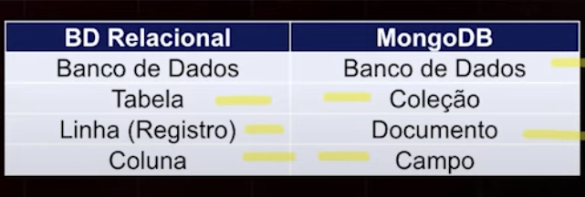
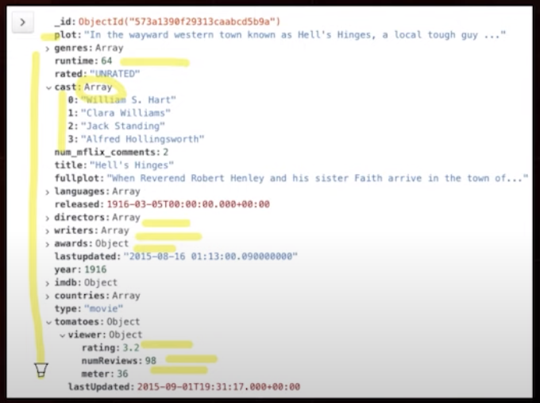
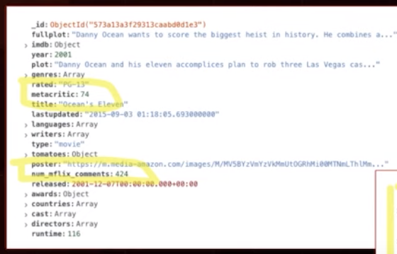
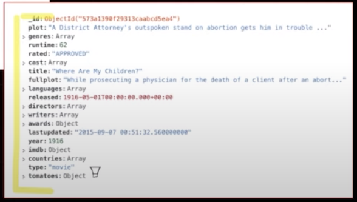
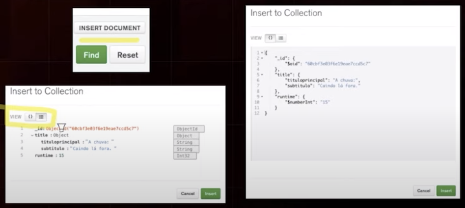

Disciplinas
-
BANCO DE DADOS-T01-2024-1 Concluído
Materiais
Vídeo 1 - Banco de Dados - MongoDB – Parte 1. sendProfessor ministrante: José Eduardo Santarem Segundo.
Conteúdo
MongoDB.
MongoDB.
- O nome Mongo deriva da palavra inglesa "Humongous” e significa imenso.
- Banco de dados NoSQL de código aberto
- (https://github.com/mongodb/mongo)
- Gratuito
- Alta Performance
- Sem Esquemas
- Orientado a documentos
- Criado em 2009 com a premissa de ser um banco que atende a grandes volumes de dados.
- Suporte a escalonamento vertical e horizontal.
- Para escala horizontal são usados os replica sets (espelhamento de instâncias) e sharding (dados distribuídos).
- Principal objetivo do MongoDB é reduzir os relacionamentos no banco de dados.
- Alguns produtos do ecossistema Mongo:
- MongoDBCharts (Dashboards visualização),
- MongoDB Atlas (Serviço Cloud Mongo),
- MongoDB Data Lake (Recurso para agregação),
- MongoDB Stitch (serviço de autenticação, acesso),
- MongoDB Compass (Ferramenta para conexão e manipulação do MongoDB), entre outros...
Formato de documentos do MongoDB é o BSON, representação binária do padrão JSON.
- Tipos de dados do Padrão JSON:
- Booleans (true/false).
- strings.
- numbers.
- null.
- arrays (listas).
- objects/documents.
Mongo DB - TERMINOLOGIA.
Relação de nomes usados nos bancos relacionais e no MongoDB.
MongoDB - DOCUMENTO.
Vamos entender um documento MongoDB.
Sempre há o campo_id:
CRIAR UMA CONTA – MongoDB Atlas.
- Crie uma conta no MongoDB Atlas para experimentar o MongoDB.
- https://www.mongodb.com/cloud/atlas
- Use sua conta do Google!
ESQUEMAS FLEXÍVEIS.
 Observe os campos não organizados na mesma ordem e atente-se a:
- num_mflix_coments e metacritic no documento superior
INSERIR UM DOCUMENTO.
Ao inserir um documento, não é necessário seguir qualquer tipo de estrutura. Mas é importante que haja uma certa organização.
